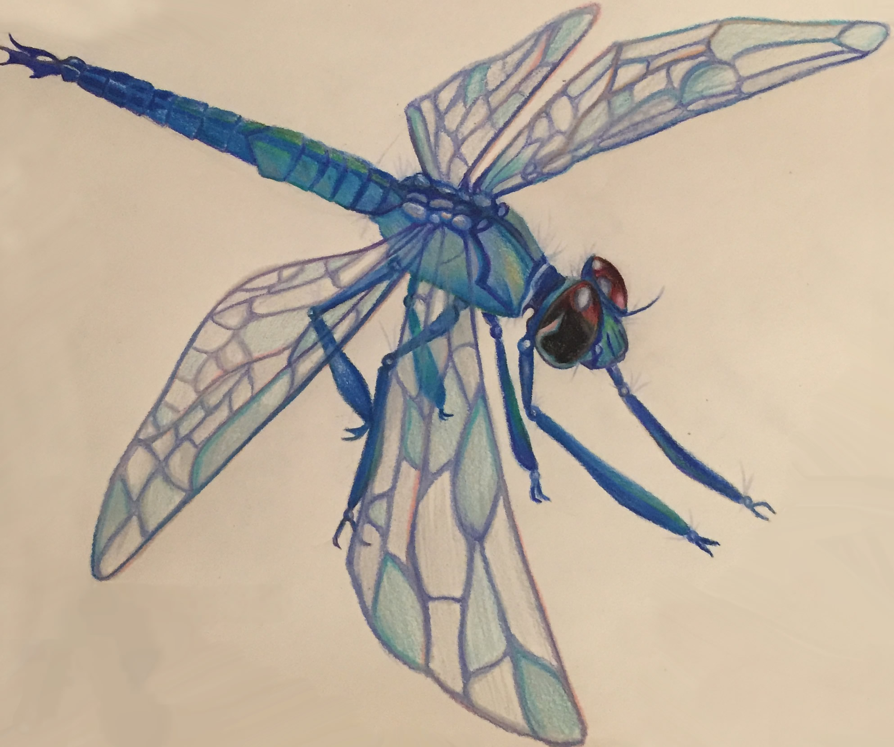

Flight of the Dragonfly
This dragonfly was a gift to my grandmother for her birthday, and was an attempt to make a piece that she would enjoy. She very explicitly said her favorite critters were blue dragonflies, so I figured in the spirit of drawing beautiful bugs- why not?
The drawing was done in a sketchbook on decently weighted paper, but wasn't planned out much beforehand. It's evident in the final product: the dragonfly seems a bit "off," colors seem to be out of place in a few areas, and there isn't a background of any sort.
In addition to being a gift for my lovely grandmother, this dragonfly was also a kind of tester piece to help me break in a fancy new set of Prismacolor pencils. It's evident in the color choices throughout the piece, but I got a bit carried away with all of my potential color choices and almost got overwhelmed. I didn't decide on a specific palette or color vein beforehand to run with so I lost myself color-wise and just began using whichever blues looked like they belonged.
Ultimatley, the colors aren't too bad at all. My only dissappointment comes from knowing that with a better sense of direction, I could've made a little dragonfly pop a bit more!